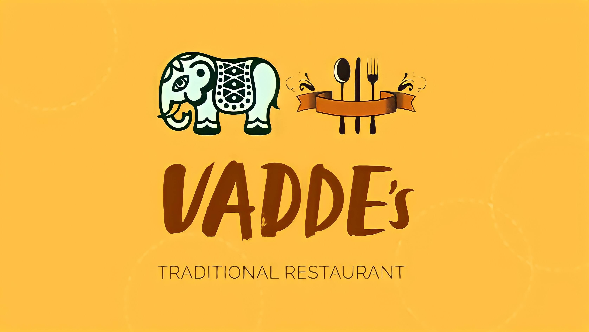

<!--nav class defined-->
<header>
<nav class="navbar navbar-expand-lg navbar-light bg-class card-header"  >
    <button
    mat-icon-button
    *ngIf="sidenav.mode === 'over'"
    (click)="sidenav.toggle()"
  >
    <mat-icon *ngIf="!sidenav.opened"> menu </mat-icon>
    <mat-icon *ngIf="sidenav.opened"> close </mat-icon>
  </button>
    <a href="home">
      
   </a>
    <div class="collapse navbar-collapse" id="navbarNav" style="justify-content: center;">
      <ul class="navbar-nav">
        <li class="nav-item">
          <a class="nav-link" style="color: white;" href="home">Home</a>
        </li>
        <li class="nav-item">
          <a class="nav-link" style="color: white;" href="About us">About</a>
        </li>
        <li class="nav-item">
          <a class="nav-link bg-color" style="color: white;" href="contact">Contact us</a>
        </li>
      </ul>
    </div>
    <div>
        <div class="collapse navbar-collapse">
          <div class="input-group" style="margin-right: 8px;">
            <input class="form-control border rounded-pill" type="text" [ngModel]="itemFilter" (ngModelChange)="modelChangeFn($event)" placeholder="search">
          </div>
          <a href="user">
            
         </a>
        </div>
    </div>
  </nav>
</header>
  
  <mat-sidenav-container>
  <mat-sidenav #sidenav="matSidenav" class="mat-elevation-z8">
    <mat-expansion-panel (opened)="panelOpenState = true" (closed)="panelOpenState = false">
      <mat-expansion-panel-header class="menu-button">
        <span>Menu</span>
      </mat-expansion-panel-header>
      <div class="matSidenav">
        <button mat-button class="menu-button" (click)="onFilterFoodItems('Breakfast')" (click)="sidenav.toggle()">
          <span>Breakfast</span>
        </button>
        <button mat-button class="menu-button" (click)="onFilterFoodItems('Lunch')" (click)="sidenav.toggle()">
          <span>Lunch</span>
        </button>
        <button mat-button class="menu-button"  (click)="onFilterFoodItems('Dinner')" (click)="sidenav.toggle()">
          <span>Dinner</span>
        </button>
      </div>
    </mat-expansion-panel>
    <mat-divider></mat-divider>
    <button mat-button class="menu-button">
      <mat-icon>settings</mat-icon>
      <span>Settings</span>
    </button>
  
    <mat-divider></mat-divider>
  
    <button mat-button class="menu-button" routerLink="/help">
      <mat-icon>help</mat-icon>
      <span>Help</span>
    </button>
  </mat-sidenav>
  <mat-sidenav-content>
      <!---<app-filterfood [itemObj]="itemFilter" style="display:block"></app-filterfood>-->
     <router-outlet></router-outlet>
  </mat-sidenav-content>
  </mat-sidenav-container>
  
  
  
  
  
  
  
  
  
  